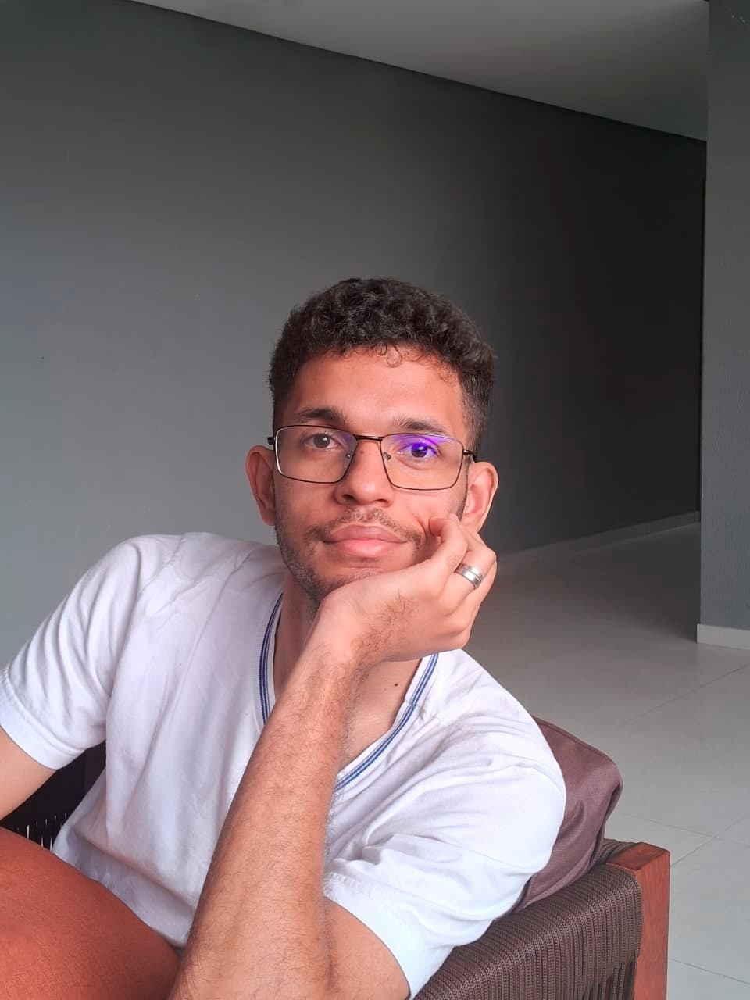

Power BI · SQL · Python
Transformo dados em decisões de negócio. Com 4 anos de experiência como auditor e foco em Business Intelligence, construo dashboards analíticos que geram impacto real e mensurável.

Sou analista com 4 anos de experiência em auditoria interna e controle financeiro, onde aprendi a "ler" processos de negócio e encontrar onde os dados contam a história real por trás dos números.
Hoje aplico esse olhar na construção de dashboards e análises em Power BI, SQL e Python — transformando dados brutos em insights que apoiam decisões estratégicas e geram valor mensurável.
Análise de dados com foco em geração de insights e impacto de negócio mensurável.
Adicione a screenshot do dashboard
Pipeline ETL completo do MySQL ao dashboard executivo. Análise de churn, comportamento de usuários e receita recorrente com DAX e modelagem dimensional.
Adicione a screenshot do dashboard
Dashboard de performance comercial com análise YoY, Star Schema otimizado e mapeamento de gap de receita por categoria e região geográfica.
Estou disponível para oportunidades de Analista de Dados — presencial ou remoto. Boa conversa começa por aqui.